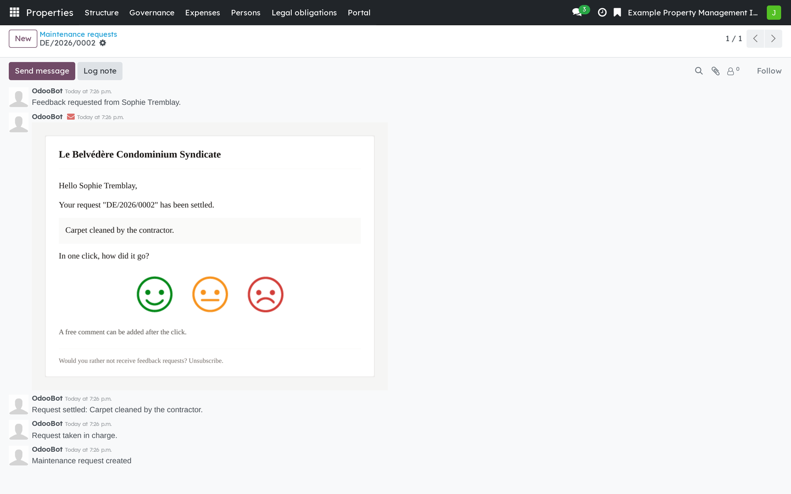
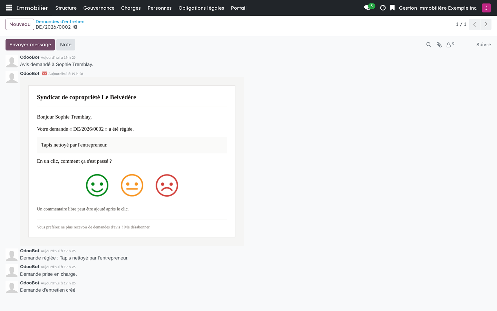

Version française plus bas.
This bridge connects the maintenance requests of the occupant portal to the customer experience listening programme. It does one thing: when a request is settled, it asks the person who filed it how it went, in three emoji. It installs itself when both sides are present.

A settled request: the feedback request sent to the person who filed it, and the answer that came back.
Requires Co-ownership: occupant portal (bf_property_portal) and Customer experience (bf_cx). Installs automatically.
Business Source License 1.1. You may use this module in production for your own internal business operations, which include administering immovables that you own or that you are constituted to administer, and letting a person acting on your behalf use your instance for that purpose. Administering immovables for the account of others, or providing the module to third parties as a product or service, whether hosted, managed or resold, requires a separate written agreement with the licensor. Each version converts to LGPL-3.0-or-later on the Change Date stated in the LICENSE file, which sets out the exact terms.
Ce pont relie les demandes d'entretien du portail de l'occupant au programme d'écoute de l'expérience client. Il fait une seule chose : quand une demande est réglée, il demande à la personne qui l'avait déposée comment ça s'est passé, en trois émojis. Il s'installe de lui-même quand les deux côtés sont présents.

Une demande réglée : la demande d'avis envoyée à la personne qui l'avait déposée, et la réponse reçue.
Exige Copropriété : portail de l'occupant (bf_property_portal) et Expérience client (bf_cx). S'installe automatiquement.
Business Source License 1.1. Vous pouvez utiliser ce module en production pour vos propres activités internes, ce qui comprend l'administration des immeubles dont vous êtes propriétaire ou que vous êtes constitué pour administrer, et l'usage de votre instance à cette fin par une personne qui agit pour votre compte. Administrer des immeubles pour le compte d'autrui, ou fournir le module à des tiers comme produit ou service, hébergé, géré ou revendu, exige une entente écrite distincte avec le concédant. Chaque version passe sous LGPL-3.0 ou ultérieure à la date de changement inscrite au fichier LICENSE, qui fait foi.